Introducción
Alan Wake es un thriller psicológico y de horror narrativo donde el protagonista, Alan Wake, un escritor famoso, viaja con su esposa Alice Wake a Bright Falls para intentar recuperar su inspiración creativa. Sin embargo, el lugar esconde una fuerza oscura antigua que altera la realidad.
Desde el inicio, el juego deja claro que la historia no es lineal y que los eventos parecen estar siendo “escritos” mientras suceden.
Capítulo 1 – El despertar en la oscuridad
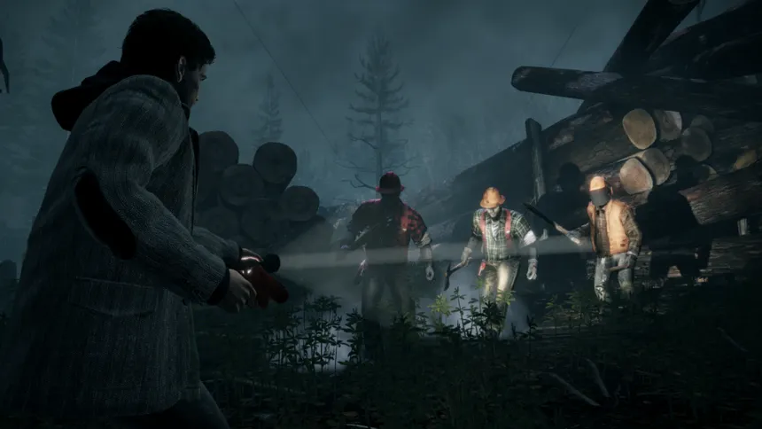
El juego comienza en una situación completamente confusa y angustiante. Alan Wake despierta solo en medio de un bosque completamente oscuro, sin recordar cómo llegó allí ni qué ocurrió antes de ese momento.
Desde los primeros segundos, el jugador ya se enfrenta a un ambiente hostil: ruidos extraños entre los árboles, visiones rápidas de figuras humanas y una sensación constante de persecución. Alan no entiende lo que está pasando, pero claramente algo lo está cazando en la oscuridad.
Muy pronto aparece el primer elemento clave del juego: la oscuridad no es solo ausencia de luz, sino una entidad activa. Estas fuerzas toman forma humana y atacan directamente a Alan. A estos enemigos se los conoce como “los poseídos”, personas que han sido corrompidas por una presencia oscura invisible.
En este punto, el jugador aprende la mecánica principal del juego: la luz es la única forma de debilitar a estas criaturas. Las linternas, faros y cualquier fuente de luz funcionan como defensa y herramienta de supervivencia.
Mientras avanza por el bosque, Alan comienza a encontrar páginas sueltas de un manuscrito titulado “Departure”. Lo inquietante es que estas páginas parecen haber sido escritas por él mismo, pero describen eventos que aún no han ocurrido.
Estas páginas funcionan como una especie de “profecía escrita”, anticipando situaciones futuras como ataques, decisiones y lugares que Alan todavía no ha visitado. Esto genera la primera gran duda del juego: ¿cómo puede Alan estar leyendo algo que aún no escribió?
El capítulo termina con Alan siendo perseguido constantemente por los poseídos mientras intenta encontrar una salida del bosque. La sensación de pérdida de control es total, y el jugador comienza a entender que la realidad del juego no es confiable.
Capítulo 2 – Llegada a Bright Falls
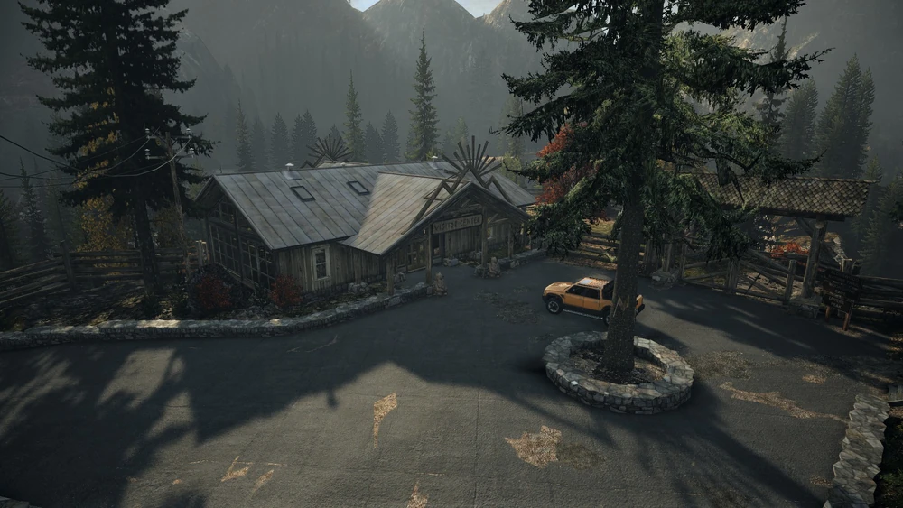
Después de los eventos confusos en el bosque, la historia retrocede unos días para mostrar el inicio del viaje de Alan Wake junto a su esposa Alice Wake hacia el pequeño pueblo de Bright Falls, un lugar aparentemente tranquilo rodeado de naturaleza.
El objetivo del viaje es simple: Alan está atravesando un bloqueo creativo muy fuerte desde hace años, y Alice cree que alejarse de la ciudad puede ayudarlo a recuperar su inspiración como escritor. Sin embargo, desde el primer momento se percibe una sensación extraña en el lugar, como si Bright Falls escondiera algo bajo su calma superficial.
Durante el viaje en auto y la llegada al pueblo, Alan muestra signos claros de estrés y ansiedad. Tiene problemas para dormir, se irrita fácilmente y se siente observado constantemente, aunque no hay nada evidente que lo explique.
En este punto aparece un personaje clave en la historia: Barry Wheeler, El agente y mejor amigo de Alan, quien lo ha acompañado en su carrera literaria durante años. Barry es extrovertido, impulsivo y actúa como contraparte emocional de Alan, intentando mantenerlo enfocado en su trabajo y su vida profesional.
Barry no viaja con ellos inicialmente, pero su presencia se siente a través de llamadas y referencias constantes. Él está preocupado por el estado mental de Alan, ya que su bloqueo creativo ha comenzado a afectar seriamente su vida personal.
Una vez en Bright Falls, Alan y Alice se hospedan en una cabaña cerca del lago Cauldron, un lugar que parece perfecto para descansar y desconectarse del mundo. El ambiente es silencioso, rodeado de bosque, y en apariencia ideal para escribir.
Sin embargo, desde el primer día en la cabaña, Alan comienza a experimentar problemas. No puede escribir, se distrae constantemente y siente una presión mental creciente. Alice intenta ayudarlo, pero Alan se vuelve cada vez más distante y frustrado.
El capítulo también introduce pequeñas pistas del misterio principal: conversaciones extrañas con habitantes del pueblo, miradas incómodas de los locales y una sensación general de que Bright Falls no es un lugar normal.
La tensión entre Alan y Alice comienza a aumentar debido al bloqueo creativo de él. Alice quiere que Alan escriba nuevamente, pero él siente que la escritura se ha convertido en una carga imposible de manejar.
El capítulo termina preparando el evento central de la historia: el lago Cauldron y la cabaña donde todo cambiará para siempre, marcando el inicio real de la pesadilla que define todo el juego.
Capítulo 3 – El Lago Cauldron
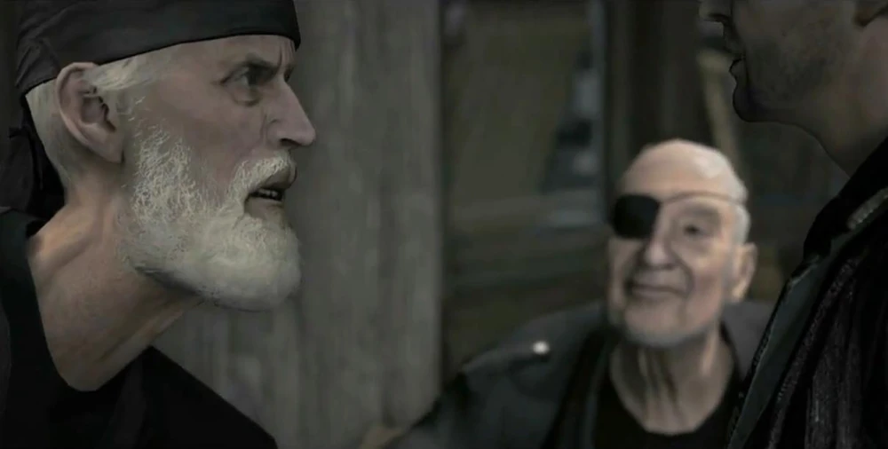
El viaje de Alan Wake junto a su esposa Alice Wake finalmente llega al punto más importante de toda la historia: el lago Cauldron. Este lugar no es solo un escenario natural, sino un punto central de todos los eventos sobrenaturales que ocurren en Bright Falls.
La cabaña donde se hospedan está rodeada por una oscuridad profunda y un silencio extraño. Desde el primer momento, Alan siente que el lugar no es normal, como si el ambiente mismo estuviera “observando” cada movimiento.
Alice insiste en que Alan intente escribir nuevamente, ya que cree que el entorno tranquilo puede ayudarlo a recuperar su creatividad. Sin embargo, Alan está cada vez más frustrado, sintiendo que algo dentro de él lo bloquea completamente.
Durante la noche, la tensión entre ambos crece. Alice quiere que Alan trabaje en su escritura, pero él se niega, sintiendo que su carrera como escritor está terminada. Esta discusión marca un punto emocional importante en la relación de la pareja.
En un intento por ayudarlo, Alice baja al sótano de la cabaña para buscar el manuscrito o material de escritura. En ese momento, la situación comienza a volverse completamente extraña: la luz empieza a fallar y la oscuridad parece moverse de forma no natural.
De repente, Alice desaparece sin explicación. Alan la busca desesperadamente dentro de la cabaña, pero no encuentra rastros de ella. Las luces parpadean, el ambiente cambia y la realidad parece distorsionarse.
En medio del caos, Alan intenta salir hacia el lago, pero es atacado por fuerzas invisibles y pierde la conciencia. Todo se vuelve confuso, como si el tiempo hubiera sido cortado abruptamente.
Cuando Alan despierta, algo está completamente mal: han pasado varios días sin que él lo recuerde, y la cabaña ya no está en el mismo estado. No hay señales claras de lo que ocurrió con Alice, pero su desaparición es un hecho irreversible.
A partir de este momento, la historia cambia por completo. Bright Falls deja de ser un pueblo tranquilo y comienza a mostrar signos de una presencia oscura que afecta la realidad misma.
El lago Cauldron se establece como el centro del misterio: un lugar donde la realidad puede ser alterada, donde los pensamientos y la creatividad pueden tomar forma física, y donde fuerzas desconocidas parecen haber estado esperando este momento durante mucho tiempo.
El capítulo termina con Alan completamente perdido, sin respuestas, sin Alice y con la sensación de que algo mucho más grande y peligroso acaba de comenzar.
Capítulo 4 – La luz es la única defensa
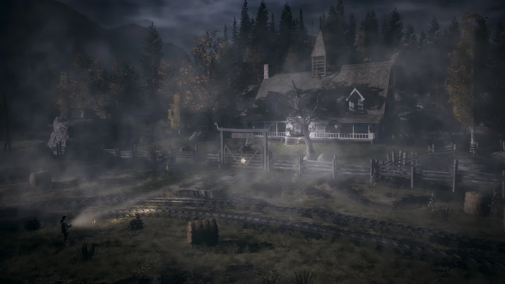
Tras la desaparición de Alice Wake, la vida de Alan Wake cambia por completo. Ya no se trata de un viaje de descanso o bloqueo creativo, sino de una situación de supervivencia dentro de una realidad que comienza a romperse.
Alan despierta solo y desorientado, sin comprender exactamente cuánto tiempo ha pasado desde los eventos del lago Cauldron. La cabaña ya no es segura, el entorno se siente diferente, y el silencio del bosque es más inquietante que nunca.
Muy pronto, Alan se enfrenta por primera vez de forma clara a los llamados “poseídos”, personas normales del pueblo que han sido corrompidas por una entidad oscura conocida como la Presencia Oscura. Estas criaturas no solo son agresivas, sino que parecen estar controladas como si fueran marionetas.
En este punto se introduce la mecánica central del juego: la luz como arma. Alan descubre que las armas convencionales no son suficientes para derrotar a los poseídos, ya que la oscuridad los protege. Sin embargo, al exponerlos a fuentes de luz intensa, su protección desaparece y pueden ser derrotados.
Linternas, faros, bengalas y cualquier fuente luminosa se convierten en herramientas esenciales para sobrevivir. Este descubrimiento cambia completamente la forma en que Alan enfrenta el peligro.
Mientras intenta encontrar respuestas, Alan comienza a recibir ayuda de la sheriff del pueblo quien está investigando una serie de desapariciones y eventos extraños en Bright Falls.
Sarah inicialmente duda de Alan, ya que su historia suena imposible. Sin embargo, a medida que los eventos sobrenaturales se vuelven más evidentes, comienza a comprender que algo muy serio está ocurriendo en el pueblo.
Alan le explica que su esposa ha desaparecido y que el entorno parece estar cambiando constantemente, como si la realidad misma fuera inestable. Aunque Sarah no tiene todas las respuestas, decide ayudarlo en su búsqueda.
Durante este capítulo, Alan también empieza a encontrar más páginas del manuscrito “Departure”. Estas páginas siguen describiendo eventos futuros con precisión inquietante, lo que refuerza la idea de que la historia está siendo escrita en tiempo real.
El manuscrito no solo predice ataques o peligros, sino también decisiones que Alan aún no ha tomado, lo que genera una creciente paranoia: alguien o algo está controlando el desarrollo de los acontecimientos.
El capítulo termina con Alan aceptando que Bright Falls ya no es un lugar normal. La desaparición de Alice, los poseídos y el comportamiento del entorno confirman que está atrapado dentro de un fenómeno sobrenatural que aún no comprende completamente.
Capítulo 5 – El manuscrito que escribe la realidad
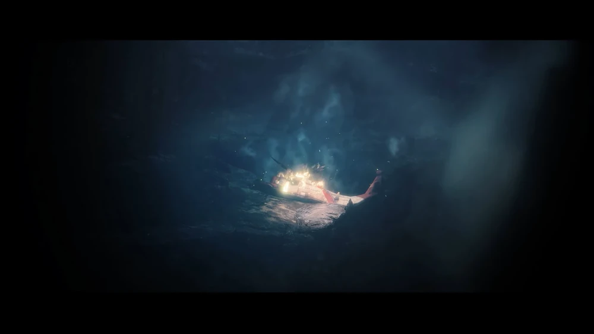
Después de los primeros enfrentamientos con los poseídos y de entender la importancia de la luz, la historia de Alan Wake entra en una etapa mucho más psicológica y confusa. Alan ya no solo lucha por sobrevivir, sino por entender qué está ocurriendo con la realidad misma.
En distintos puntos de Bright Falls, Alan comienza a encontrar páginas del manuscrito titulado “Departure”. Lo más inquietante es que estas páginas no solo están escritas con su estilo, sino que describen eventos que él aún no ha vivido.
Cada página parece anticipar situaciones futuras con una precisión imposible: ataques de los poseídos, diálogos que aún no han ocurrido, decisiones que Alan todavía no ha tomado y lugares a los que aún no ha llegado.
Esto genera una creciente sensación de paranoia en Alan. Si el manuscrito es real, entonces su vida está siendo escrita antes de que suceda. Si no lo es, entonces alguien está manipulando su percepción de la realidad.
Mientras más avanza la historia, Alan comienza a sospechar que no solo está leyendo el manuscrito, sino que de alguna forma forma parte de su creación. Esto lo lleva a cuestionar su propia identidad como escritor.
En este punto del viaje, la relación con la sheriff se vuelve más importante. Ella intenta mantener a Alan enfocado y ayudarlo a entender los patrones detrás de los eventos extraños del pueblo, aunque cada vez resulta más difícil distinguir qué es real y qué no.
El problema se intensifica cuando Alan empieza a recordar fragmentos de cosas que supuestamente no ocurrieron aún, como si su mente estuviera sincronizada con el manuscrito. Esto refuerza la idea de que el tiempo en Bright Falls no funciona de manera normal.
A medida que avanza el capítulo, el entorno también comienza a comportarse de forma inestable. Caminos que antes estaban abiertos ahora desaparecen, estructuras cambian de lugar y la sensación de estar dentro de una historia escrita se vuelve cada vez más fuerte.
Alan también comienza a dudar de sus propias acciones. En algunos momentos no está seguro si está tomando decisiones libremente o simplemente siguiendo instrucciones escritas previamente en el manuscrito.
El capítulo termina con Alan entendiendo algo aterrador: el manuscrito no es solo una predicción, sino una herramienta que puede alterar la realidad. Y si eso es cierto, entonces alguien está usando ese poder para moldear Bright Falls… y posiblemente todo lo que existe alrededor del lago Cauldron.
Capítulo 6 – La investigación y la conspiración
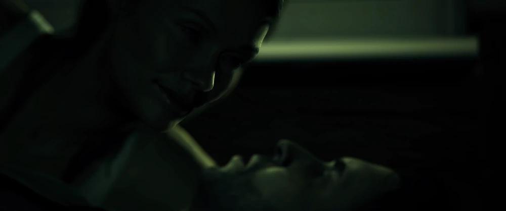
A medida que los eventos sobrenaturales en Bright Falls se vuelven imposibles de ignorar, la historia de Alan Wake toma un giro más profundo hacia la investigación y la conspiración. Ya no se trata solo de supervivencia, sino de entender el origen del fenómeno que afecta al pueblo.
En este punto aparece una figura clave en la investigación federal: Emily Burke, agente del FBI enviada para investigar las desapariciones y los eventos inexplicables relacionados con el lago Cauldron y la región de Bright Falls.
Emily no cree inicialmente en explicaciones sobrenaturales. Su enfoque es lógico y científico, intentando encontrar una explicación racional a los sucesos. Sin embargo, los informes que recibe contradicen cualquier teoría convencional.
Desapariciones sin rastro, cambios en la estructura del entorno, personas que regresan actuando de forma violenta y comportamientos imposibles de explicar comienzan a acumularse en el expediente del caso.
Mientras tanto, Alan continúa encontrando páginas del manuscrito “Departure”, que ahora no solo predicen eventos, sino que parecen describir directamente las investigaciones del FBI y sus resultados futuros.
Esto sugiere algo inquietante: el manuscrito no solo afecta la realidad local, sino que también influye en personas externas al fenómeno, como si la historia estuviera expandiéndose más allá de Bright Falls.
Durante la investigación, se revela que el lago Cauldron no es un lugar común. Existen registros históricos de sucesos extraños ocurridos en la zona durante décadas, todos vinculados a la creatividad humana y fenómenos inexplicables.
Se teoriza que el lago funciona como un punto de conexión entre la mente humana y la realidad, capaz de transformar ideas, pensamientos y obras creativas en eventos físicos si tienen suficiente fuerza o intención.
Esto explica por qué Alan, como escritor, está en el centro de todo el conflicto: su mente tiene la capacidad de dar forma a la realidad a través del manuscrito.
Mientras la investigación avanza, la presencia conocida como “La Oscuridad” o “La Presencia Oscura” comienza a manifestarse con más fuerza, sugiriendo que no es solo un fenómeno, sino una entidad consciente que busca expandirse fuera del lago.
El capítulo termina con una conclusión inquietante: Bright Falls no es solo un pueblo afectado por eventos sobrenaturales, sino el epicentro de un sistema mucho más grande donde la realidad puede ser escrita, alterada y controlada.
Capítulo 7 – La caída de Bright Falls

A medida que los eventos se intensifican, la situación en Bright Falls deja de ser un misterio aislado y se convierte en una crisis total. La historia de Alan Wake entra en su fase más caótica, donde la realidad del pueblo comienza a colapsar por completo.
Las personas que habitaban Bright Falls comienzan a ser afectadas de manera irreversible por la Presencia Oscura. Muchos ciudadanos desaparecen, mientras que otros regresan transformados en los llamados “poseídos”, entidades violentas controladas por la oscuridad.
Estos poseídos ya no actúan de forma individual, sino como una fuerza organizada que parece responder a una misma voluntad. Se mueven en grupos, coordinan ataques y reaccionan a la presencia de luz como si fuera su principal debilidad.
La sheriff intenta mantener el control de la situación dentro de lo posible, pero la infraestructura del pueblo comienza a colapsar. Las comunicaciones fallan, las rutas de escape desaparecen y el entorno se vuelve cada vez más inestable.
Alan, por su parte, sigue encontrando páginas del manuscrito “Departure”, pero ahora estas páginas no solo predicen eventos, sino que parecen describir la destrucción progresiva del propio Bright Falls en tiempo real.
El entorno empieza a comportarse de forma imposible: caminos que se deforman, casas que cambian de lugar, carreteras que aparecen y desaparecen, y zonas completamente sumergidas en oscuridad absoluta donde la realidad parece no existir.
En este punto, Alan comprende que la oscuridad no es solo un fenómeno local, sino una entidad activa que está utilizando el lago Cauldron como punto de expansión. Cada persona afectada se convierte en una extensión de su voluntad.
El miedo y la desesperación se vuelven constantes. Incluso los aliados de Alan comienzan a dudar de lo que está ocurriendo, ya que la lógica deja de ser suficiente para explicar los eventos.
La presencia de la Oscuridad se vuelve más directa, manifestándose de forma más agresiva y constante, como si estuviera tomando control progresivo de toda la región.
Bright Falls deja de ser un pueblo normal y se transforma en un espacio inestable, donde la realidad se fragmenta y la supervivencia depende completamente de la luz y la capacidad de Alan para seguir avanzando.
El capítulo termina con la sensación de que ya no hay vuelta atrás: Bright Falls está completamente bajo la influencia de la oscuridad, y el conflicto ha escalado a un nivel donde la realidad misma está en juego.
Capítulo 8 – La verdad del escritor

En este punto de la historia, la situación en Bright Falls ya está completamente fuera de control. La realidad ha sido distorsionada casi por completo por la Presencia Oscura, y la historia de Alan Wake entra en su fase de mayor revelación.
Alan continúa encontrando páginas del manuscrito “Departure”, pero ahora comienza a entender algo aterrador: el manuscrito no solo predice el futuro, sino que está construyendo la realidad mientras se escribe.
Cada palabra escrita tiene un efecto directo sobre el mundo físico. No es una simple profecía, sino una herramienta capaz de alterar el espacio, el tiempo y los eventos que ocurren en Bright Falls.
Esto lleva a Alan a una conclusión crítica: él no es solo un personaje dentro de la historia, sino el creador involuntario de muchos de los eventos que están ocurriendo.
La Presencia Oscura ha estado manipulando este poder desde el inicio, utilizando el talento de Alan como escritor para intentar materializar su propia existencia en el mundo real.
A través del manuscrito, la entidad ha ido moldeando la realidad del lago Cauldron y de todo Bright Falls, expandiendo su influencia página tras página.
La sheriff intenta ayudar a Alan a mantener la cordura mientras él procesa la verdad. Sin embargo, la línea entre realidad y ficción se vuelve cada vez más borrosa.
Alan empieza a recordar fragmentos de lo que podría ser el proceso de escritura del manuscrito, aunque no está seguro de si esos recuerdos son reales o parte de la manipulación de la Oscuridad.
El mayor impacto emocional ocurre cuando Alan comprende que cada intento de cambiar la historia mediante la escritura tiene un precio. No se puede reescribir la realidad sin consecuencias.
La Oscuridad no solo reacciona a lo que Alan escribe, sino que lo fuerza a escribir bajo sus propias reglas, convirtiendo el manuscrito en una prisión narrativa donde la historia ya tiene un camino definido.
El capítulo culmina con una revelación definitiva: Alan es el único capaz de mantener la estabilidad del mundo a través de su escritura, pero al mismo tiempo es el principal instrumento que la Oscuridad necesita para escapar completamente del lago Cauldron.
Esto convierte a Alan en una figura central del conflicto: creador y prisionero al mismo tiempo.
Capítulo 9 – El origen del lago Cauldron

A medida que la historia de Alan Wake avanza hacia su punto más profundo, se revelan los secretos más antiguos de Bright Falls y del lago Cauldron, el centro de todos los eventos sobrenaturales que han ocurrido desde el inicio del juego.
El lago Cauldron no es un simple cuerpo de agua. A lo largo de la historia del lugar, se han registrado múltiples eventos inexplicables relacionados con la creatividad humana, la imaginación y la materialización de pensamientos en la realidad.
Se descubre que el lago actúa como una especie de “umbral” entre la mente humana y el mundo físico. Las ideas, especialmente aquellas con gran carga emocional o creativa, pueden volverse reales si entran en contacto con su energía.
Esto explica por qué el manuscrito de Alan tiene tanto poder: no es solo escritura, sino una forma de canalizar la realidad a través de la creatividad.
Sin embargo, esta capacidad no es neutral. También permite la manifestación de entidades negativas, especialmente aquellas basadas en miedo, trauma y oscuridad mental.
Aquí es donde entra en juego la Presencia Oscura: una entidad que ha existido en el lago durante mucho tiempo, esperando la oportunidad de escapar hacia el mundo real.
A diferencia de otras fuerzas, esta entidad no tiene forma física estable. Su existencia depende de la oscuridad, el miedo y la falta de luz, utilizando estos elementos como medio para manifestarse.
Con el tiempo, la Oscuridad ha intentado encontrar una forma de salir del lago Cauldron, pero solo ha podido hacerlo parcialmente, influenciando eventos y personas en los alrededores de Bright Falls.
El descubrimiento más importante es que la Presencia Oscura no puede crear por sí misma. Necesita un “creador humano” con suficiente poder creativo para escribir una realidad en la que pueda existir completamente.
Ese creador resulta ser Alan Wake.
La combinación del lago Cauldron como amplificador de realidad y el talento literario de Alan convierte a ambos en piezas fundamentales del mismo sistema: uno como puerta, el otro como llave.
El capítulo deja claro que todo lo ocurrido en Bright Falls no es un accidente, sino un proceso cuidadosamente manipulado por la Oscuridad para encontrar su salida definitiva al mundo real.
Capítulo Final – El sacrificio

Después de comprender la verdadera naturaleza del lago Cauldron y de la Presencia Oscura, la historia de Alan Wake entra en su momento decisivo. Ya no se trata de sobrevivir, sino de tomar una decisión que afectará la realidad misma.
Alan entiende que la única forma de detener la expansión completa de la Oscuridad es utilizando el mismo sistema que la mantiene activa: la escritura del manuscrito.
Sin embargo, cualquier intento de reescribir la realidad tiene un costo. El lago Cauldron no permite cambios sin consecuencias, y cada alteración exige un equilibrio.
La sheriff intenta comprender la situación final, pero ya no hay una solución lógica o policial al problema. Lo que está ocurriendo ha superado completamente la realidad normal.
Alan descubre que la única forma de salvar a su esposa Alice Wake es escribir un nuevo final dentro del manuscrito “Departure”, uno en el que la Oscuridad no gane y Bright Falls pueda estabilizarse nuevamente.
Pero para lograrlo, alguien debe ocupar el lugar que mantiene el equilibrio del sistema. La realidad necesita un “precio” para cada corrección, y ese precio es Alan mismo.
En el momento final, Alan decide escribir la única historia posible: una en la que Alice sobrevive, la Oscuridad es contenida y el mundo vuelve a estabilizarse, pero él desaparece dentro del lago Cauldron.
Al escribir este nuevo final, Alan se sumerge voluntariamente en la oscuridad, quedando atrapado en una dimensión fuera del tiempo, donde continúa existiendo como el único que puede seguir escribiendo la realidad desde dentro.
Alice Wake logra sobrevivir y regresa al mundo real, aunque sin comprender completamente lo ocurrido. Bright Falls vuelve a un estado de aparente normalidad, como si nada hubiera pasado.
Sin embargo, el equilibrio no es perfecto. La historia deja claro que la Oscuridad no ha sido destruida por completo, sino contenida temporalmente.
Alan permanece atrapado, escribiendo eternamente para mantener ese equilibrio, convirtiéndose en parte del sistema que antes intentó comprender.
El final deja una sensación de ciclo incompleto, sugiriendo que la historia podría repetirse o continuar bajo nuevas formas en el futuro.
Final de Alan Wake – Explicado en detalle

El final de Alan Wake no es un final convencional de victoria o derrota, sino una conclusión basada en el sacrificio, el equilibrio de la realidad y el poder de la escritura como herramienta para alterar el mundo.
A lo largo de la historia, Alan descubre que el lago Cauldron funciona como un punto de conexión entre la imaginación humana y la realidad física. A través de este lugar, la escritura puede convertirse en un medio capaz de modificar lo que existe.
Sin embargo, este poder no es libre ni sin consecuencias. Todo cambio en la realidad requiere un equilibrio, lo que significa que cualquier alteración importante necesita un “precio” para mantener la estabilidad del sistema.
La entidad conocida como la Presencia Oscura ha estado utilizando este sistema para intentar escapar del lago Cauldron y expandirse al mundo real, manipulando los eventos desde el inicio del juego.
Alan comprende que el manuscrito “Departure” no es solo una historia, sino una estructura que está siendo utilizada para moldear la realidad. Cada palabra escrita tiene el poder de afectar directamente lo que sucede en Bright Falls.
El objetivo emocional principal de Alan es salvar a su esposa, Alice Wake, quien ha sido arrastrada a los eventos sobrenaturales desde el inicio del conflicto.
Para lograrlo, Alan intenta reescribir el final de la historia dentro del manuscrito, creando una versión donde Alice sobrevive y la Oscuridad es contenida. Sin embargo, este acto no puede realizarse sin consecuencias.
El sistema del lago Cauldron exige un equilibrio: si la historia es modificada para salvar a alguien, otra cosa debe ocupar el vacío generado por ese cambio.
Alan entiende entonces que la única forma de resolver el conflicto es convertirse él mismo en ese “precio narrativo”. No se trata de destruir a la Oscuridad, sino de contenerla mediante un sacrificio.
En el momento final, Alan decide escribir el nuevo desenlace y se sumerge en el lago Cauldron, entrando en la dimensión de la Oscuridad. Este acto lo separa de la realidad física.
Como resultado, Alice Wake logra sobrevivir y el mundo exterior regresa a un estado de aparente normalidad. Bright Falls deja de mostrar los efectos inmediatos de la corrupción.
Sin embargo, el equilibrio no es perfecto. La Oscuridad no ha sido destruida, sino contenida temporalmente dentro del sistema que ahora mantiene Alan desde el otro lado.
Alan queda atrapado en una dimensión fuera del tiempo, donde continúa existiendo como el único capaz de mantener la estabilidad de la realidad a través de la escritura.
El final deja claro que su existencia se ha convertido en parte del mecanismo que regula la realidad, convirtiéndolo tanto en creador como en prisionero de la historia.
Esto transforma el final en un ciclo abierto, donde la historia no termina completamente, sino que queda en un estado de equilibrio inestable que podría repetirse o evolucionar en el futuro.
Alan Wake’s American Nightmare – Continuación de la historia
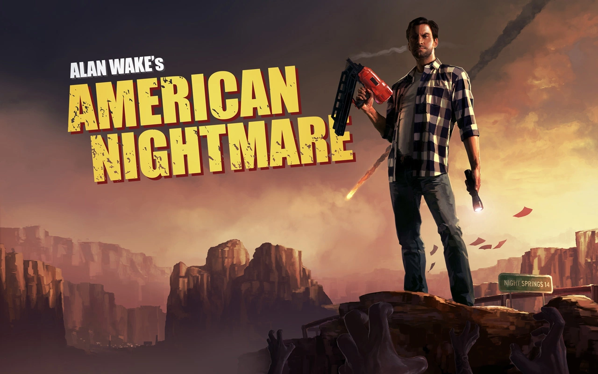
Después de los eventos de Bright Falls, la historia de Alan Wake no termina realmente. Alan no logra regresar a su vida normal, sino que queda atrapado en un estado intermedio entre la realidad y la Oscuridad.
En este nuevo ciclo aparece una versión distorsionada de la realidad conocida como Alan Wake’s American Nightmare, donde Alan es forzado a revivir patrones similares de conflicto, pero con variaciones creadas por la Presencia Oscura.
El principal antagonista de esta etapa es Mr. Scratch, una manifestación oscura de Alan Wake creada a partir de su identidad fragmentada. Esta entidad representa todo lo que Alan podría llegar a ser si pierde completamente el control sobre la narrativa.
Mr. Scratch no es solo un enemigo físico, sino una versión alternativa de Alan que ha sido moldeada por la Oscuridad para reemplazarlo como “autor” de la realidad.
En este ciclo, Alan descubre que no está escapando realmente, sino que está siendo probado dentro de múltiples versiones de la misma historia. Cada realidad es ligeramente diferente, pero todas están controladas por la misma fuerza: la Presencia Oscura.
El objetivo de Alan ya no es solo sobrevivir, sino recuperar el control sobre su identidad como escritor y romper la influencia de Mr. Scratch sobre las distintas versiones de la realidad.
La luz sigue siendo un elemento fundamental, no solo como defensa, sino como símbolo de estabilidad dentro de un sistema narrativo que intenta descomponerse constantemente.
Cada uso de la luz permite a Alan restaurar fragmentos de realidad y resistir la manipulación de la Oscuridad, pero el ciclo siempre tiende a reconstruirse de nuevas formas.
Esto deja claro que el conflicto no terminó en Bright Falls, sino que se expandió a múltiples capas de realidad, donde Alan sigue siendo el núcleo del sistema.
El resultado es un estado continuo de lucha entre identidad, narrativa y control, donde Alan Wake sigue atrapado dentro de su propia historia, intentando mantener el equilibrio entre creación y destrucción.
Alan Wake 2 – La historia completa
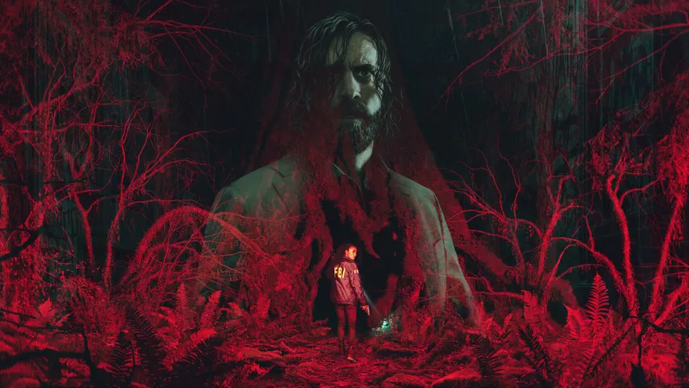
Años después de los eventos de Bright Falls y de los sucesos dentro de la Oscuridad, la historia de Alan Wake continúa en un estado completamente diferente. Ya no se trata solo de un pueblo aislado afectado por fuerzas sobrenaturales, sino de una realidad fragmentada donde la narrativa misma se ha convertido en una fuerza activa.
En Alan Wake 2, la Oscuridad ha evolucionado. Ya no depende únicamente del lago Cauldron, sino que ha comenzado a expandirse a través de la ficción, los recuerdos y las historias no contadas. La realidad y la narrativa se mezclan de forma constante.
---Capítulo 1 – La nueva investigación en Bright Falls
El caso comienza con una serie de asesinatos rituales en Bright Falls y sus alrededores. El FBI envía a la agente Saga Anderson, conocida por su capacidad de reconstruir escenas del crimen con una precisión casi sobrenatural.
Saga descubre rápidamente que los asesinatos no siguen un patrón normal. Cada escena parece estar “escrita” como si alguien estuviera siguiendo un guion predeterminado.
Las víctimas están conectadas con símbolos, páginas de manuscritos y referencias directas a eventos que no deberían existir en la realidad.
---Capítulo 2 – Alan atrapado en la Oscuridad
Mientras tanto, Alan Wake sigue atrapado en la dimensión de la Oscuridad. Su existencia no es física en el mundo real, sino narrativa: vive dentro de versiones distorsionadas de su propia historia.
Alan intenta escribir una salida, pero cada intento es corrompido. La Oscuridad no solo bloquea su escritura, sino que la reinterpreta para fortalecer su propio control sobre la realidad.
Alan entiende que ya no está escribiendo una historia para escapar, sino luchando contra una fuerza que escribe contra él en tiempo real.
---Capítulo 3 – Dos realidades conectadas
La historia comienza a dividirse en dos líneas paralelas:
- El mundo real, donde Saga investiga los asesinatos
- La Oscuridad, donde Alan intenta reescribir la realidad
Ambas líneas comienzan a influenciarse entre sí. Los eventos investigados por Saga empiezan a coincidir con fragmentos de la escritura de Alan.
Esto revela algo fundamental: la historia no solo describe la realidad, sino que la está generando activamente.
---Capítulo 4 – La mente como herramienta narrativa
Saga Anderson comienza a utilizar un sistema mental para reconstruir la verdad detrás de los asesinatos. Este sistema le permite visualizar conexiones, patrones y reconstrucciones de eventos imposibles.
A diferencia de Alan, que usa la escritura, Saga usa la lógica y la percepción para intentar estabilizar la realidad.
Esto crea un contraste directo entre:
La escritura (creación de realidad)
La lógica (interpretación de realidad)
Capítulo 5 – La expansión de la Oscuridad
La Presencia Oscura deja de estar limitada al lago Cauldron. Ahora comienza a manifestarse a través de historias, símbolos y personas conectadas a la narrativa de Alan Wake.
Ya no necesita un lugar físico: utiliza la ficción como medio de expansión.
Cada historia, cada recuerdo y cada interpretación incorrecta se convierte en una puerta potencial para su influencia.
---Capítulo 6 – La guerra narrativa
El conflicto central se vuelve claro:
Alan intenta escribir una salida.
Saga intenta reconstruir la verdad.
La Oscuridad intenta controlar ambas narrativas.
La realidad deja de ser objetiva y se convierte en un campo de batalla entre interpretación, escritura y percepción.
Cada acción modifica no solo el mundo, sino la forma en que el mundo es entendido.
---Capítulo final – La realidad como historia
El juego plantea una idea central: la realidad no es fija, sino una historia que puede ser escrita, interpretada o corrompida.
Alan Wake se convierte en el escritor atrapado dentro de su propia obra, mientras que Saga Anderson representa la mente que intenta encontrar orden dentro del caos.
La Oscuridad, por su parte, es la fuerza que intenta convertir toda la existencia en una narrativa controlada por ella misma.
El resultado es un universo donde no hay separación clara entre historia y realidad, sino una lucha constante por definir qué es verdadero.
Personajes
A continuación se presentan los personajes principales del universo de Alan Wake y su rol dentro de la historia.
Alan Wake
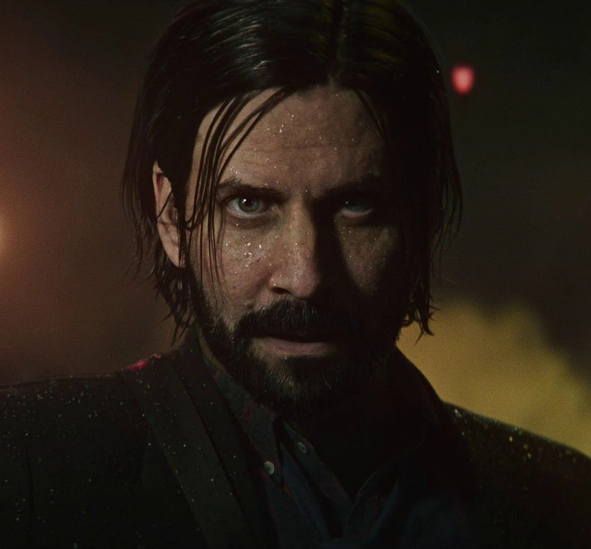
Alan Wake es el protagonista principal de la saga, un escritor de novelas de suspenso psicológico que se ve atrapado en una serie de eventos sobrenaturales en el pueblo de Bright Falls.
Alan comienza como un escritor exitoso con bloqueo creativo, pero su vida cambia cuando viaja con su esposa Alice Wake a Bright Falls. Allí descubre que la realidad puede ser alterada a través de la escritura.
Con el tiempo, Alan entiende que está atrapado dentro de un sistema narrativo controlado por una entidad conocida como la Oscuridad, convirtiéndose en el eje central del conflicto entre realidad y ficción.
Su estado actual es el de un escritor atrapado en una dimensión oscura, intentando mantener el equilibrio del mundo mientras busca una forma de escapar.
Barry Wheeler
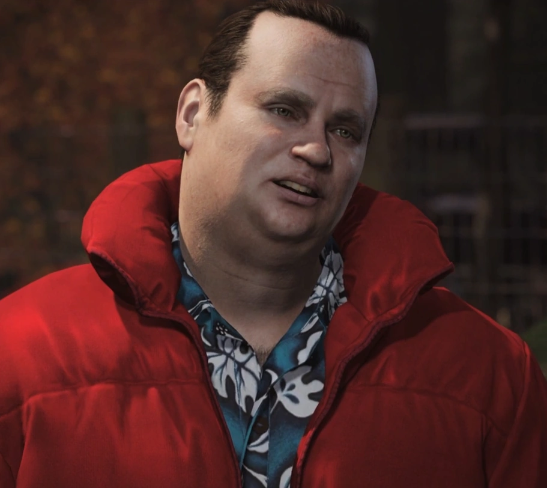
Barry Wheeler es el agente literario y mejor amigo de Alan Wake. Es una de las pocas personas del entorno de Alan que intenta mantenerlo estable tanto emocional como profesionalmente durante su crisis creativa.
Barry tiene una personalidad extrovertida, exagerada y optimista, lo que contrasta directamente con la naturaleza introspectiva y estresada de Alan Wake. Esta diferencia lo convierte en un personaje clave para equilibrar la tensión emocional de la historia.
A lo largo de los eventos de Bright Falls, Barry se ve involucrado indirectamente en los fenómenos sobrenaturales que afectan a Alan, aunque inicialmente no comprende la magnitud de lo que está ocurriendo.
Con el avance de la historia, Barry se convierte en un apoyo fundamental para Alan, ayudándolo a mantener la cordura en medio del colapso de la realidad y la influencia de la Oscuridad.
A pesar de no poseer habilidades sobrenaturales, su lealtad y determinación lo convierten en uno de los pocos aliados en los que Alan puede confiar completamente.
En el contexto del universo de Alan Wake, Barry representa el vínculo humano más estable de Alan con la realidad normal, funcionando como ancla emocional dentro del caos narrativo.
Alice Wake
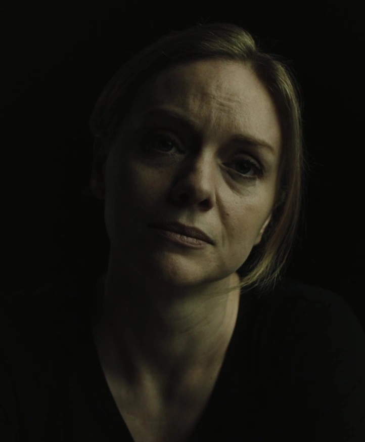
Alice Wake es la esposa de Alan Wake y una figura central en el desarrollo emocional de la saga. Su presencia es el principal motivo por el cual Alan inicia su viaje a Bright Falls.
Alice es una persona comprensiva y determinada, que apoya a Alan durante su bloqueo creativo y lo acompaña en su intento por recuperar su inspiración como escritor.
Sin embargo, su vida cambia radicalmente cuando queda atrapada en los eventos sobrenaturales relacionados con el lago Cauldron y la Presencia Oscura.
A lo largo de la historia, Alice se convierte en el vínculo emocional más importante para Alan, representando su conexión con la realidad y su motivación principal para resistir la influencia de la Oscuridad.
Su desaparición y posterior situación dentro del conflicto sobrenatural marcan el punto de quiebre de la historia, obligando a Alan a enfrentar las consecuencias de la realidad alterada.
En el contexto del universo de Alan Wake, Alice simboliza la parte humana y emocional que mantiene a Alan anclado a la realidad, incluso cuando todo a su alrededor comienza a desmoronarse.
Sarah Breaker
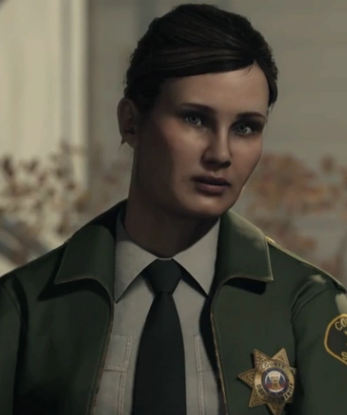
Sarah Breaker es la sheriff de Bright Falls y una de las principales autoridades encargadas de investigar los eventos extraños que ocurren en la región durante la historia de Alan Wake.
Sarah es una persona racional, disciplinada y acostumbrada a resolver situaciones desde un enfoque lógico. Al inicio de los eventos, intenta explicar los sucesos como casos criminales o fenómenos aislados, sin aceptar de inmediato una explicación sobrenatural.
Con el avance de la historia de :contentReference[oaicite:2]{index=2}, Sarah se ve obligada a enfrentar situaciones que superan cualquier lógica convencional, incluyendo la aparición de los poseídos y la distorsión de la realidad en Bright Falls.
A pesar de sus dudas iniciales, termina convirtiéndose en una aliada importante para Alan Wake, ayudándolo a comprender la situación y a sobrevivir dentro del caos generado por la Presencia Oscura.
Su rol dentro de la historia representa el intento de mantener el orden y la racionalidad en un entorno donde las reglas de la realidad comienzan a romperse.
En el universo de Alan Wake, Sarah Breaker simboliza la resistencia de la lógica humana frente a lo imposible, funcionando como puente entre la investigación policial y los eventos sobrenaturales.
Emil Hartman
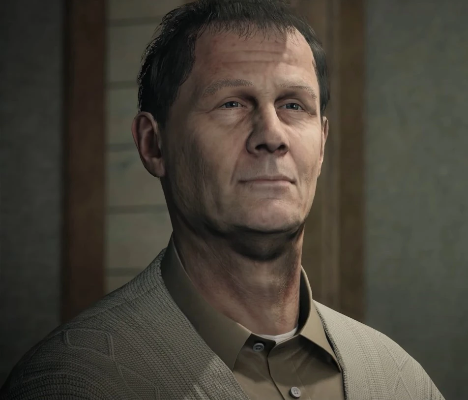
Emil Hartman es un psiquiatra y especialista en estudios sobre creatividad y comportamiento humano, involucrado en la investigación de los fenómenos ocurridos en Bright Falls.
Hartman es el director del centro de investigación ubicado en Cauldron Lake, donde estudia a personas con habilidades creativas excepcionales, especialmente escritores y artistas.
Durante los eventos de Alan Wake, Hartman se obsesiona con el potencial de la Oscuridad como fuente de inspiración creativa, creyendo que puede controlar o aprovechar su poder para sus propios estudios.
Sin embargo, su curiosidad lo lleva a subestimar la naturaleza peligrosa de la Presencia Oscura, lo que termina afectando directamente su destino dentro del conflicto sobrenatural.
Hartman representa la figura del científico que intenta racionalizar lo inexplicable, buscando convertir lo sobrenatural en un objeto de estudio controlable.
Dentro del universo de Alan Wake, su papel es el de advertencia sobre los peligros de intentar manipular fuerzas que están fuera del entendimiento humano.
Cynthia Weaver
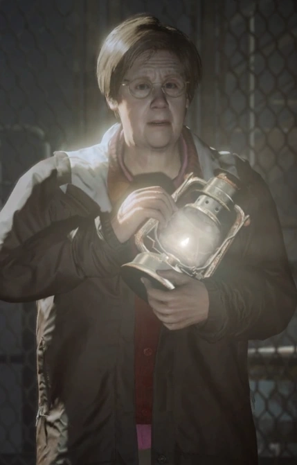
Cynthia Weaver es una habitante de Bright Falls profundamente conectada con los eventos sobrenaturales relacionados con el lago Cauldron y la Presencia Oscura.
Desde hace años, Cynthia ha dedicado su vida a la luz, interpretándola como una fuerza protectora capaz de contener la oscuridad que emerge en la región.
Durante los eventos de Alan Wake, Cynthia juega un papel importante al comprender mejor que la mayoría la naturaleza del conflicto entre la luz y la Oscuridad.
Su conocimiento del entorno y de los fenómenos relacionados con el faro de Bright Falls la convierten en una figura clave para la comprensión de los eventos sobrenaturales.
A diferencia de otros personajes, Cynthia no intenta racionalizar lo que ocurre, sino que acepta la existencia de fuerzas que escapan a la comprensión humana.
En el universo de Alan Wake, Cynthia Weaver representa la fe en la luz como elemento de equilibrio frente al caos de la Oscuridad.
Hermanos Anderson
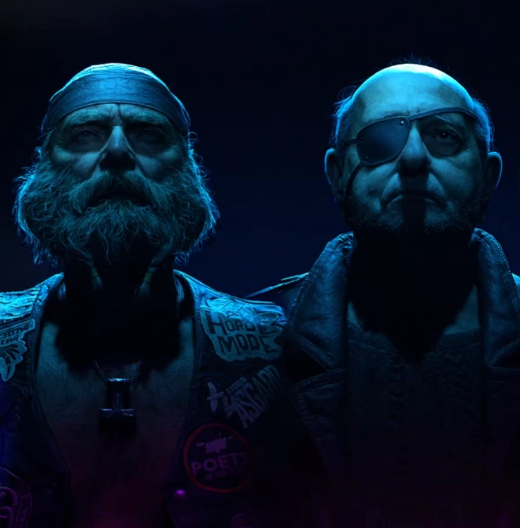
Hermanos Anderson, Odin y Tor Anderson, son dos hermanos mayores que viven en Bright Falls y que poseen una conexión única con los eventos sobrenaturales relacionados con el lago Cauldron y la Oscuridad.
Ambos personajes son ex músicos de rock y ex miembros de la banda Old Gods of Asgard, y han vivido experiencias que les han permitido comprender la existencia de fuerzas más allá de la realidad común.
Durante los eventos de Alan Wake, los hermanos Anderson muestran un conocimiento profundo sobre la naturaleza de la Oscuridad, aunque su forma de expresarlo es caótica y simbólica.
A pesar de su apariencia excéntrica y comportamiento errático, los hermanos poseen una comprensión intuitiva de los patrones que rigen los eventos sobrenaturales en Bright Falls.
Su conexión con la música y la memoria les permite interpretar fragmentos de la realidad alterada, funcionando como una especie de “oráculo” dentro del universo de la saga.
En el contexto del lore, los hermanos Anderson representan la idea de que la verdad no siempre se entiende de forma lógica, sino también a través de símbolos, arte y percepción.
Thomas Zane
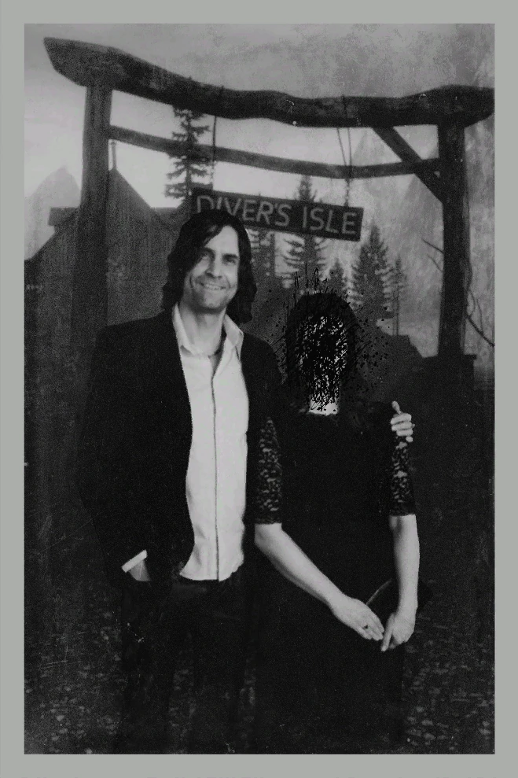
Thomas Zane es un poeta y escritor del pasado que está profundamente ligado a los orígenes de los eventos sobrenaturales en Bright Falls y al lago Cauldron.
Zane fue uno de los primeros en descubrir que la realidad puede ser alterada mediante la escritura creativa, estableciendo una conexión directa entre la imaginación humana y fuerzas que escapan al control físico del mundo.
Durante los eventos relacionados con Alan Wake, su figura se convierte en un punto clave para entender el origen del conflicto entre la luz, la Oscuridad y la narrativa como fuerza activa.
Thomas Zane desaparece en circunstancias vinculadas al lago Cauldron, pero su influencia permanece presente a través de la realidad alterada y los fragmentos de historia que siguen apareciendo en el entorno.
Su legado sugiere que él mismo pudo haber intentado reescribir la realidad en el pasado, generando consecuencias que aún afectan al presente de Alan Wake.
En el universo de la saga, Thomas Zane representa la idea de que los escritores no solo crean historias, sino que pueden llegar a modificar la estructura misma de la realidad.
Barbara Jagger
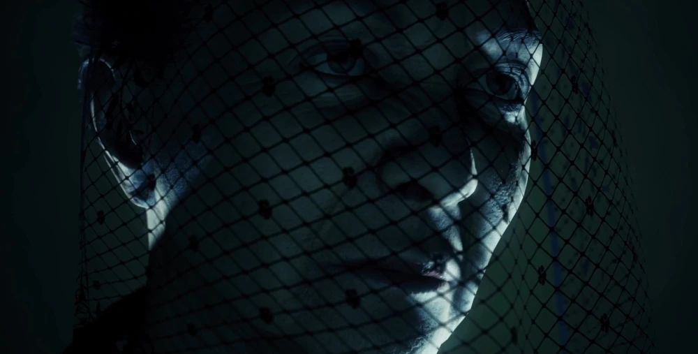
Barbara Jagger es una figura central en los eventos sobrenaturales vinculados al lago Cauldron y a la Presencia Oscura.
En vida, Barbara fue una persona cercana a Thomas Zane, y su destino quedó trágicamente ligado a las fuerzas sobrenaturales que emergen desde las profundidades del lago.
Tras su muerte, Barbara se convierte en uno de los principales vehículos de manifestación de la Oscuridad, siendo utilizada como una forma física o identidad para influir en el mundo real.
Durante los eventos de :contentReference[oaicite:1]{index=1}, su figura es clave para entender cómo la Oscuridad utiliza recuerdos, identidades y emociones humanas para tomar forma en la realidad.
La conexión entre Barbara Jagger y Thomas Zane es fundamental dentro del lore, ya que ambos representan el origen emocional y creativo del conflicto entre la luz y la Oscuridad.
En el universo de la saga, Barbara Jagger simboliza la corrupción de la identidad a través de la Oscuridad, donde incluso el recuerdo de una persona puede ser transformado en una entidad activa dentro de la narrativa.
Emma Sloan
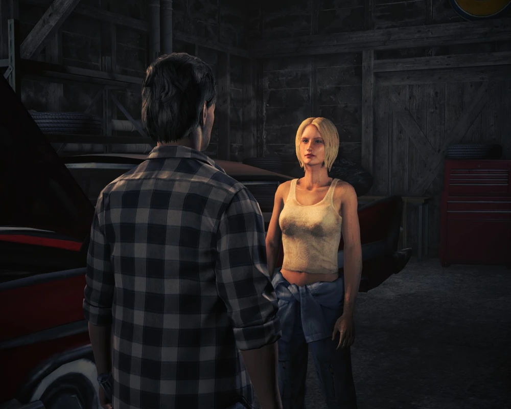
Emma Sloan es una de las personas relacionadas indirectamente con los eventos que ocurren en Bright Falls durante la historia de Alan Wake American Nightmare.
Su papel dentro del universo no está ligado directamente a la acción principal, pero forma parte del entorno humano afectado por la presencia de la Oscuridad y los cambios en la realidad.
Emma representa a los habitantes comunes que intentan comprender los eventos sobrenaturales desde una perspectiva normal, sin tener acceso directo a la naturaleza real del conflicto.
A medida que los sucesos en Bright Falls se intensifican, personajes como Emma reflejan el impacto indirecto de la Oscuridad en la vida cotidiana de la ciudad.
En el contexto del lore, Emma Sloan simboliza a las personas comunes atrapadas dentro de una historia que no pueden controlar ni entender completamente.
Rachel Meadows
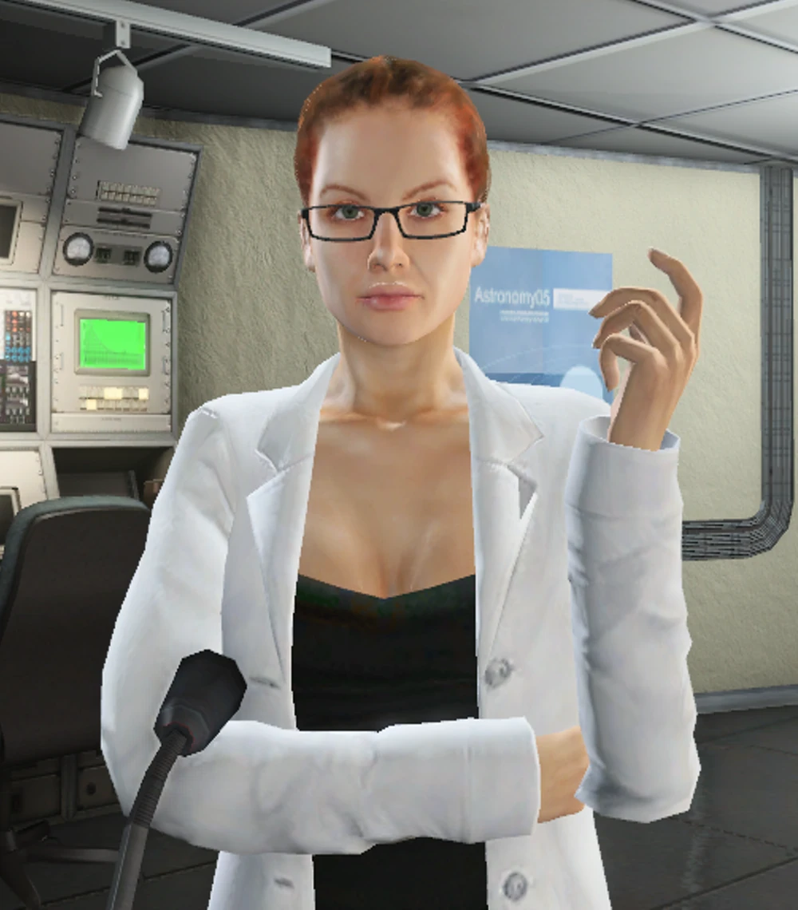
Rachel Meadows es una persona vinculada al entorno de Bright Falls durante los eventos relacionados con Alan Wake American Nightmare.
Su presencia forma parte del contexto social de la ciudad, afectada indirectamente por las alteraciones de la realidad provocadas por la Oscuridad y los fenómenos del lago Cauldron.
Rachel representa a los habitantes que intentan mantener una vida normal mientras los eventos sobrenaturales comienzan a distorsionar progresivamente su entorno sin una explicación clara.
A lo largo del conflicto, personajes como Rachel reflejan el impacto silencioso de la Oscuridad en la población que no está directamente involucrada en los eventos principales, pero que igualmente sufre sus consecuencias.
En el contexto del universo de Alan Wake, Rachel Meadows simboliza la fragilidad de la normalidad dentro de un mundo donde la realidad puede ser reescrita.
Saga Anderson
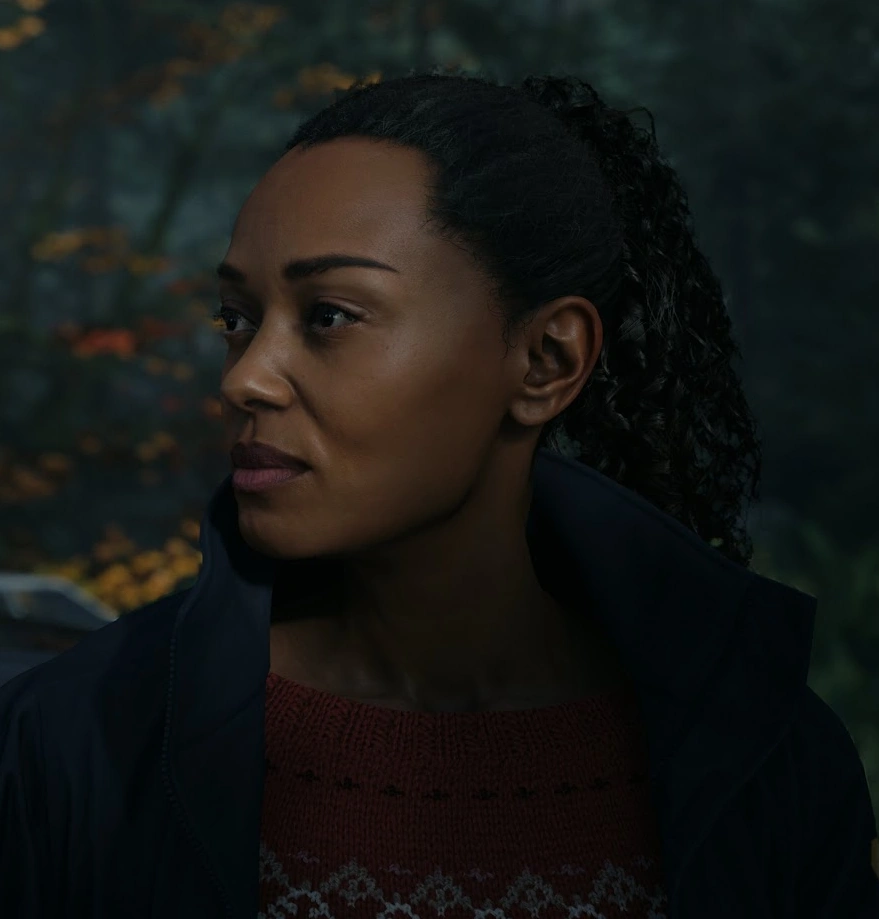
Saga Anderson es una agente del FBI encargada de investigar una serie de asesinatos rituales en la región de Bright Falls durante los eventos de Alan Wake 2.
Saga es reconocida por su gran capacidad analítica y su habilidad para reconstruir escenas del crimen con precisión extrema, utilizando un método de deducción mental que le permite visualizar conexiones entre hechos aparentemente inconexos.
Su llegada a Bright Falls marca el inicio de una investigación que rápidamente se transforma en un caso mucho más complejo de lo esperado, donde la realidad comienza a mezclarse con elementos de ficción y narrativa alterada.
A diferencia de otros personajes del universo, Saga intenta mantener una visión estrictamente lógica de los eventos, incluso cuando las pruebas comienzan a indicar la existencia de fuerzas sobrenaturales.
Durante su investigación, Saga descubre que su historia está conectada directamente con la de Alan Wake, quien permanece atrapado en la Oscuridad intentando influir en la realidad a través de la escritura.
Esta conexión convierte su papel en el de una figura clave dentro del conflicto central del universo, donde la lógica y la narrativa comienzan a enfrentarse como fuerzas opuestas.
En el contexto del lore, Saga Anderson representa la mente racional dentro de un mundo donde la realidad puede ser moldeada por la ficción, funcionando como contrapeso directo a la influencia de la Oscuridad.
Alex Casey
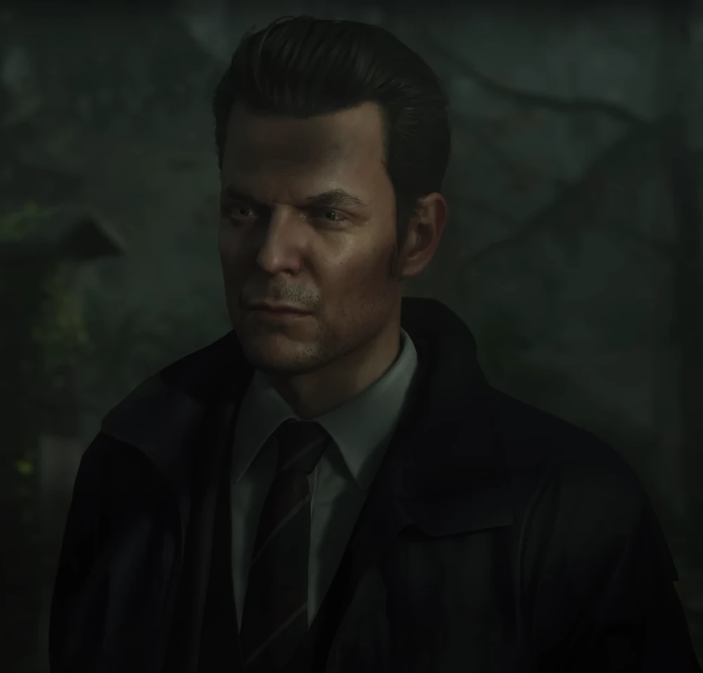
Alex Casey es un agente del FBI que trabaja junto a Saga Anderson durante la investigación de los asesinatos rituales en Bright Falls en los eventos de Alan Wake 2
Casey es un investigador experimentado, con un enfoque más directo y pragmático que el de Saga, lo que lo convierte en un contrapunto dentro del equipo de investigación.
A lo largo de la historia, su presencia se ve influenciada por los eventos sobrenaturales vinculados a la Oscuridad y a la narrativa creada por Alan Wake, lo que genera situaciones donde la realidad parece distorsionarse alrededor de su figura.
Su conexión con el caso lo lleva a enfrentarse a fenómenos que desafían la lógica, obligándolo a cuestionar los límites entre lo real y lo ficticio.
En el contexto del universo de Alan Wake, Alex Casey representa la perspectiva policial tradicional dentro de un mundo donde la realidad está siendo reescrita por fuerzas narrativas incontrolables.
Rose Marigold
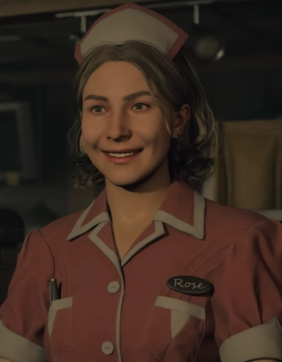
Rose Marigold es una habitante de Bright Falls que trabaja en la cafetería local del pueblo y que desarrolla una fuerte admiración por Alan Wake durante los eventos de la historia.
Rose es una persona optimista, sensible y profundamente influenciada por las historias de Alan, a quien percibe como una figura casi heroica dentro del caos que afecta a la ciudad.
A lo largo de los acontecimientos de Alan Wake 2, su obsesión con Alan la lleva a involucrarse indirectamente en los sucesos sobrenaturales relacionados con la Oscuridad y el lago Cauldron.
Su conexión emocional con Alan la convierte en un personaje importante dentro del entorno social de Bright Falls, reflejando cómo los eventos afectan también a personas que no están directamente involucradas en la investigación o el conflicto principal.
En el contexto del universo de Alan Wake, Rose Marigold representa la admiración, la fe y la idealización de una figura creativa atrapada en circunstancias sobrenaturales.
Koskela Brothers
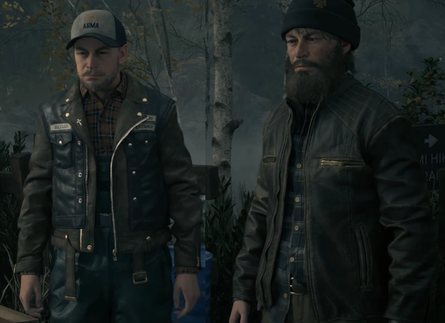
Koskela Brothers, Ilmo y Jaakko Koskela, son dos hermanos empresarios que juegan un papel importante dentro de la comunidad de Bright Falls durante los eventos de Alan Wake 2
Son propietarios de empresas locales y figuras públicas que intentan promover el turismo y la imagen positiva de la región, incluso cuando los acontecimientos sobrenaturales comienzan a afectar el área.
A lo largo de la historia, los hermanos Koskela representan el intento de mantener una fachada de normalidad en Bright Falls, mientras la realidad se vuelve cada vez más inestable debido a la influencia de la Oscuridad.
Su presencia aporta una visión más cotidiana del entorno, mostrando cómo los habitantes y empresarios locales reaccionan ante eventos que no comprenden completamente.
En el contexto del universo de Alan Wake, los Koskela Brothers simbolizan la negación y adaptación social frente a fenómenos que desafían la lógica y la estabilidad de la realidad.
Tim Breaker
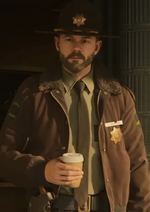
Tim Breaker es un personaje recurrente dentro de los eventos de Alan Wake 2, cuya presencia está vinculada a múltiples versiones y capas de la realidad alterada.
Tim es presentado como una figura con experiencia en situaciones extrañas y fenómenos fuera de lo normal, lo que lo lleva a involucrarse indirectamente en los casos relacionados con Bright Falls.
A lo largo de la historia, su papel se vuelve cada vez más ambiguo debido a las distorsiones de la realidad, donde distintas versiones de él parecen coexistir o repetirse en diferentes contextos narrativos.
Esto lo convierte en un personaje clave para entender cómo la Oscuridad afecta no solo el mundo físico, sino también la estructura de identidad de las personas dentro del universo de Alan Wake.
En el contexto del lore, Tim Breaker representa la idea de la identidad fragmentada, donde un mismo individuo puede existir en múltiples versiones dependiendo de la narrativa que lo rodea.
Kiran Estevez
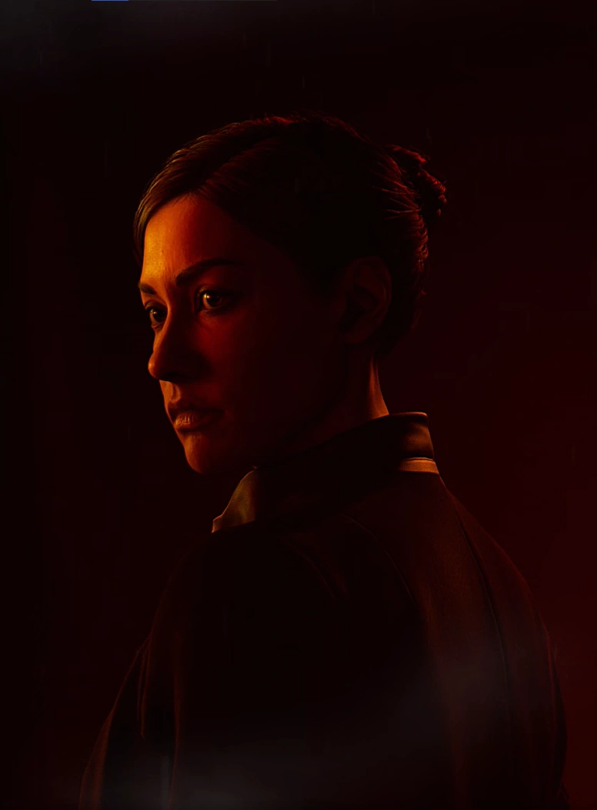
Kiran Estevez es una agente del FBI que participa en la investigación de los eventos sobrenaturales ocurridos en Bright Falls durante los sucesos de Alan Wake 2
Estevez forma parte del equipo federal encargado de analizar los asesinatos rituales y los fenómenos anómalos que comienzan a expandirse por la región, los cuales no pueden ser explicados por métodos de investigación tradicionales.
A diferencia de otros personajes, Kiran representa un enfoque más operativo y táctico dentro del FBI, encargándose de coordinar respuestas en campo ante situaciones de alto riesgo.
Con el avance de la historia, su rol se ve afectado por la creciente distorsión de la realidad, lo que obliga a reconsiderar los límites entre lo que es posible y lo que no dentro del caso.
En el contexto del universo de Alan Wake, Kiran Estevez simboliza la respuesta institucional frente a fenómenos que escapan completamente al control humano y científico.
Warlin Door
Warlin Door es una figura enigmática dentro de los eventos de Alan Wake 2, asociada a fenómenos de transición entre diferentes niveles de realidad y narrativa.
Door es presentado como un personaje con un conocimiento profundo sobre la estructura de la realidad alterada, mostrando comprensión sobre cómo las historias pueden influir directamente en el mundo físico.
A lo largo del desarrollo del conflicto en Bright Falls, su presencia sugiere que existen capas más profundas dentro del sistema narrativo que rige los eventos de Alan Wake.
Su comportamiento y sus intervenciones indican que no es simplemente un observador, sino una entidad con capacidad de influir o desplazarse entre distintas versiones de la realidad.
En el contexto del universo de Alan Wake, Warlin Door representa la idea de los límites entre historias, dimensiones y narrativas, funcionando como una figura que conecta distintos planos del conflicto.